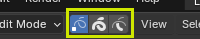
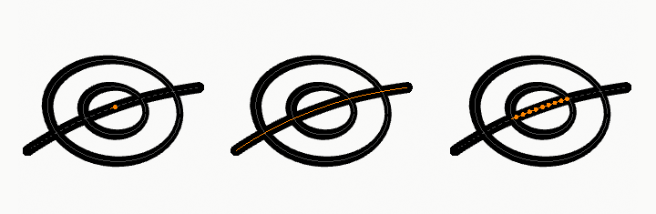

Chọn các phần tử Grease Pencil¶
Select Mode¶
Tham khảo
- Mode:
Edit Mode
- Menu:
- Shortcut:
1, 2, 3

Các nút chọn trong Edit Mode.¶
Trong Edit Mode có ba chế độ chọn khác nhau. Bạn có thể vào các chế độ khác nhau bằng cách chọn một trong ba nút ở thanh tiêu đề.
- Points:
Để chọn từng điểm riêng lẻ.
- Strokes:
Để chọn toàn bộ một nét vẽ.
- Segments:
Để chọn tất cả các điểm nằm giữa các nét vẽ khác.

Ví dụ về chọn điểm, chọn nét và chọn phần nằm giữa các nét.¶
Chọn Tất cả/Không/Đảo ngược¶
Tất cả các tùy chọn này có ý nghĩa và hành vi giống như trong Object Mode.
Select Random¶
Tham khảo
- Mode:
Edit Mode
- Menu:
Chọn ngẫu nhiên các điểm hoặc nét vẽ chưa được chọn.
- Ratio
Xác suất một phần tử chưa được chọn sẽ được chọn. Lưu ý rằng đây không phải là phần trăm số lượng phần tử sẽ được chọn.
- Random Seed
Seed được bộ sinh số ngẫu nhiên giả sử dụng.
- Action
Chọn hoặc bỏ chọn các phần tử.
Select Alternated¶
Tham khảo
- Mode:
Edit Mode
- Menu:
Chọn các điểm xen kẽ trong các nét vẽ được chọn.
Select More/Less¶
Tham khảo
- Mode:
Edit Mode
- Menu:
- Shortcut:
Ctrl-NumpadPlus, Ctrl-NumpadMinus
Mục đích của các operator này là thu hẹp hoặc mở rộng vùng chọn hiện tại trong một nét vẽ (tức là chúng sẽ không bao giờ "đi ra ngoài" một nét vẽ hay "nhảy" sang một nét vẽ khác trong cùng object).
- More
Với mỗi điểm được chọn, chọn tất cả các điểm liên kết với nó (tức là một hoặc hai...).
- Less
Với mỗi điểm được chọn, nếu tất cả các điểm liên kết với điểm này được chọn, giữ điểm này được chọn. Nếu không, bỏ chọn nó.
Gợi ý
Khi tất cả các điểm của một nét vẽ được chọn, sẽ không có gì xảy ra (với Less, mọi điểm liên kết luôn được chọn, và dĩ nhiên More không thể thêm điểm nào). Ngược lại, điều tương tự xảy ra khi không có điểm nào được chọn.
By Stroke Type¶
Tham khảo
- Mode:
Edit Mode
- Menu:
Chọn các đường cong dựa trên việc chúng là nét hay fill.
- Type
- Stroke:
Chọn tất cả các đường cong nét (viền ngoài).
- Fill:
Chọn tất cả các đường cong fill (các hình kín được tô).
- Deselect
Nếu bật, các đường cong khớp sẽ bị bỏ chọn thay vì được chọn.
Select Similar¶
Tham khảo
- Mode:
Edit Mode
- Menu:
- Shortcut:
Shift-G
Chọn tất cả các nét vẽ có đặc tính tương tự.
- Mode
Các đặc tính để so sánh.
- Layer:
Chọn tất cả các điểm/nét vẽ có chỉ số layer tương tự.
- Material:
Chọn tất cả các điểm/nét vẽ có chỉ số material tương tự.
- Vertex Color:
Chọn tất cả các điểm/nét vẽ có vertex color tương tự.
- Radius:
Chọn tất cả các điểm/nét vẽ có bán kính nét tương tự.
- Opacity:
Chọn tất cả các điểm/nét vẽ có độ mờ layer tương tự
- Threshold
Mức tương đồng yêu cầu của vùng chọn.
Select Fill¶
Tham khảo
- Mode:
Edit Mode
- Menu:
- Shortcut:
Ctrl-L
Chọn tất cả các đường cong thuộc cùng vùng fill với đường cong đang hoạt động.
Fill của Grease Pencil có thể được cấu thành từ nhiều đường ranh giới. Operator này mở rộng vùng chọn hiện tại để bao gồm tất cả các đường cong xác định cùng một vùng tô kín.
Điều này hữu ích khi chỉnh sửa hoặc biến đổi một hình đã tô trọn vẹn, bảo đảm tất cả các nét ranh giới được chọn cùng nhau.
Select Linked¶
Tham khảo
- Mode:
Edit Mode
- Menu:
- Shortcut:
L
Chọn nét vẽ nằm dưới con trỏ cùng với tất cả các điểm được nối thuộc cùng nét vẽ đó.
Điều này hữu ích để nhanh chóng chọn trọn một nét vẽ nhằm chỉnh sửa, biến đổi, di chuyển giữa các layer, hoặc áp dụng thay đổi material.
- Deselect Linked
Loại nét vẽ được nối nằm dưới con trỏ khỏi vùng chọn.
Phím tắt: Shift-L
Select First/Last¶
Tham khảo
- Mode:
Edit Mode
- Menu:
Các operator này sẽ chuyển đổi việc chọn điểm đầu hoặc điểm cuối của (các) nét vẽ trong object. Điều này hữu ích để nhanh chóng tìm điểm bắt đầu của một nét vẽ.